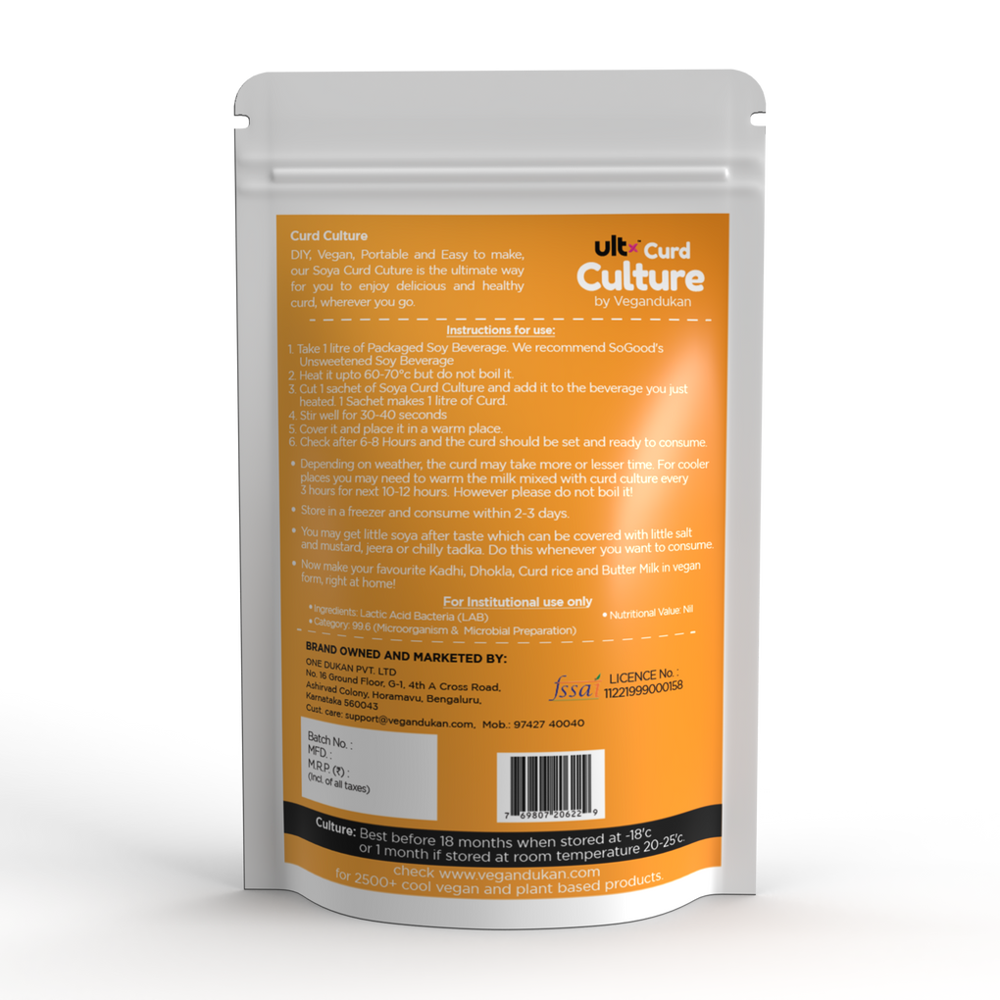

Ultx Curd Culture, 30 Sachets
DIY, Vegan, Portable and Easy to make, our Soya Curd Culture is the ultimate way for you to make delicious and healthy curd, anytime, anywhere.
Functional benefit (s):
- 100% Vegan
- Healthier than dairy
- OLactose-free
Ingredients: Lactic Acid Bacteria (LAB)